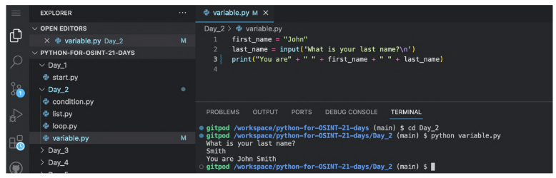
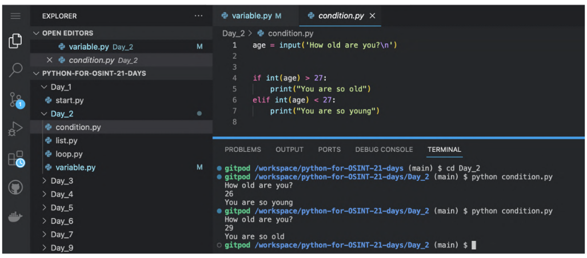
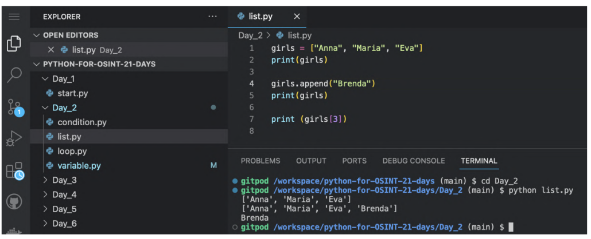
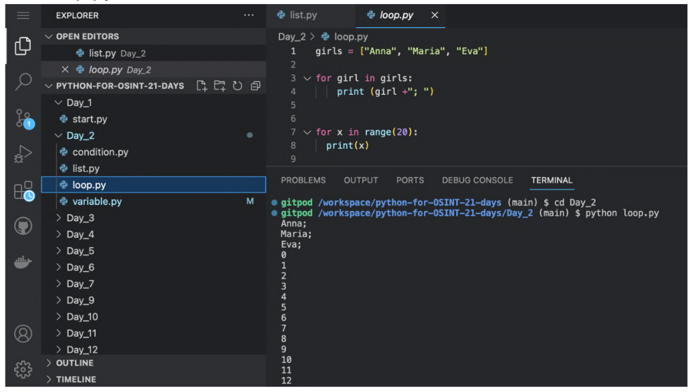

8 Dia 2 - O mínimo da sintaxe básica do Python
Hoje vamos ver os quatro conceitos básicos da linguagem Python, que também pode ser encontrado nas linguagens de programação mais populares. Falarei delas a seguir da maneira mais simples possível.
Se você já tiver estudado Python antes, poderá achar que eu perdi muita coisa importante na explicação. Porém quero relembrar que este livro não pretende tornar você um bom desenvolvedor Python, mas mostrar soluções simples e possíveis para automatizar rotinas de OSINT.
8.1 Variáveis
De acordo com a definição clássica é “uma área nomeada na memória que é usada para acessar determinados dados”.
Variáveis no Python podem armazenar:
- Valores em texto - desde uma letra é um capítulo de livro. Este tipo de dado é declarado usando
str(). - Números inteiros - são declarados usando a função
int(); - Números float - são declarados usando a função
int(); - True / False - são declarados usando a função
bool().
Existem outros tipos de dados, mas não veremos neste livro.
Em algumas linguagens é necessário declarar o tipo de variável. Em Python não precisa fazer isso desnecessariamente (faremos algumas vezes neste livro). Por exemplo, quando quiser acrescentar um número a uma string/text ou combinar de alguma forma variáveis que são definidas por padrão como dados de tipos diferentes.
Você pode usar letras maiúsculas, minúsculas e o carácter underscore _ nos nomes das variáveis. Pode também utilizar números, desde que não inicie com eles.
Tente nomea-las com nomes que façam sentido, será mais fácil entender seu código no futuro.
Vamos praticar um pouco!
Rode o script variable.pyda pasta Day_2:
cd Day_2
python variable.py
Note que rodamos o script Python diferente do primeiro capítulo. Da outra vez especificamos o caminho certo do arquivo. Desta vez abrimos primeiro a pasta Day_2 e então rodamos o arquivo variable.py. Os dois jeitos são aceitàveis, utilize o que achar melhor.
Como resultado deve aparecer algo similar a imagem acima.
De agora em diante, vou explicar o script utilizando jogo da velha #. Você pode incluí-los no seu código. Todo texto que vem após o jogo da velha é ignorado pelo interpretador.
Recomendo que primeiro você entenda o que o script está fazendo e só depois leia a explicação.
# Atribui o valor John a variável first_name
first_name = "John"# O valor da variável last_name é decidido pelo usuária. O uso da função input() possibilita isso. O \n serve para quebrar uma linha, pode remover se quiser.
last_name = input('What is your last name?\n')# A saída são valores que estão nas duas variáveis. Usamos a função print() para visualizar. O + serve para concatenar.
print("You are" + " " + first_name + " " + last_name)Note que estamos usando aspas simples e duplas para strings. Os dois jeitos são aceitáveis no Python.
A partir daqui vamos começar a usar funções. Uma função é um objeto que pede um valor como entrada e retorna como resposta uma ação ou um valor.
input()eprint()são funções embutidas em Python que pedem strings como argumento.
Em algum momento deste livro você aprenderá a criar suas próprias funções.
8.2 Estrutura condicional
É uma construção sintática que permite efetuar uma ação a partir de uma condição estabelecida. Vamos ver um exemplo.
Rode condition.py:

# Primeiro usamos a função input() para pedir a idade da usuária.
age = input('How old are you?\n')# Se ela entrar com um valor maior que 27, nós respondemos que ela está muito velha.
if int(age) > 27:
print("You are so old")# Se for menor que 27, ela é muito nova.
elif int(age) < 27:
print("You are so young")8.3 Listas
Uma lista é um conjunto ordenado de itens, cada um com seu próprio índice, permitindo acesso rápido.
Rode list.py:

# Criei uma lista de nomes.
girls = ["Anna", "Maria", "Eva"]# Mostrei os nomes usando a função print()
print(girls)# Adicionei um item usando a função embutida append()(por padrão novos elementos são adicionados ao final da lista).
girls.append("Brenda")# Mostrei a lista atualizada
print(girls)# Mostrei o item 3 da lista (as listas começam a contar a partir do 0).
print (girls[3])Neste livro usaremos bastante as listas e aprenderemos mais função embutidas para trabalhar com elas.
Se você já estudou outras linguagens de programação, provavelmente o conceito de arrays lhe é familiar. Python també tem este conceito. Os arrays em Python se difere das listas particularmente pelo fato de que em listas você usa dados de diferentes tipos (por exemplo, o primeiro elemento de uma lista pode ser uma string e o segundo um número), enquanto os arrays só podem ter um tipo de elemento.
Existem outras diferenças que fazem a lista ser mais flexível e conveniente. Para a maioria das tarefas relacionadas a OSINT, é suficiente saber como usar listas, por isso não estudaremos arrays neste livro.
Listas podem ser multidimensionais, quando cada item da lista é também outra lista de 2, 3 ou mais itens. Este tipo será mencionado rapidamente neste livro.
8.4 Estrutura de repetição
Este tipo de estrutura permite que você repita um código algumas vezes, passando pelos elementos de um array, um por um.
Rode loop.py:

# Criei uma lista de nomes.
girls = ["Anna", "Maria", "Eva"]# Mostrei um a um na tela, adicionando um ponto e vírgula.
for girl in girls:
print (girl +"; ")# Mostrei na tela de 0 a 19 (lembrando que a contagem em Python começa com 0).
for x in range(20):
print(x)Quando usar estruturas de condição ou repetição, sempre atente a identação (espaços para organizar o código). Eles devem ser sempre quatro espaços antes do código “interno”.
Na minha opinião, este é o mínimo de teoria que você precisa para escrever scripts Python. No próximo capítulo vamos aprender na prática os conhecimentos que serão úteis para OSINT.